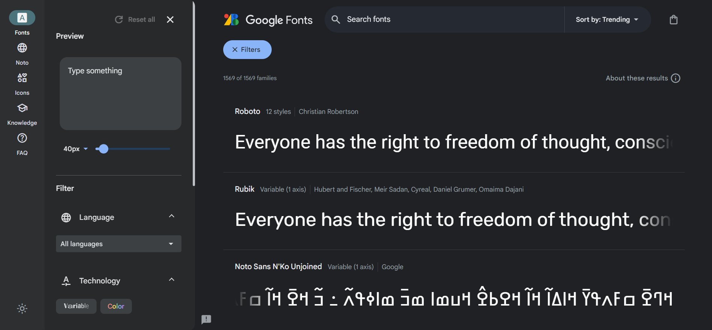

Lab 2: CSS Backgrounds, shadows, and typography
I. Backgrounds
The background property is a shorthand for eight properties:
- background-image: Specifies an image from a file or a generated color gradient.
- background-position: Sets the initial position of the background image.
- background-size: Specifies how large to render the background image within the element.
- background-repeat: Determines whether to tile the image if necessary to fill the entire element.
- background-origin: Determines whether background positioning is relative to the element's border-box, padding-box (initial value), or content-box.
- background-clip: Specifies whether the background should fill the element's border-box (initial value), padding-box, or content-box.
- background-attachment: Specifies whether the background image will scroll up and down along with the element (the initial value), or if the image will be fixed in place in the viewport.
- background-color: Specifies a solid background color.
Also, using the shorthand property (background) will set the values you specify while also resetting all the others to their initial value.
The background-image property is particularly interesting. It accepts a path to an image URL (background-image: url(Oran.jpg)), but it can also accept a gradient function (see example below).
HTML
< div class="Gradient_Div" > < /div >CSS
.Gradient_Div {background-image: linear-gradient(90deg, #00dbde, #fc00ff);
}
/* Using color stops */
.Gradient_Div {
background-image: linear-gradient(to right, #017137, #ffffff, #f47639);
}
/* Stripes */
.Gradient_Div {
background-image: linear-gradient( to bottom, #000000 0%, #000000 33%, #c71231 33%, #c71231 66%, #ffba32 66% );
}
/* Repeating gradients */
.Gradient_Div {
background-image: repeating-linear-gradient( to bottom, #be0b31 0%, #be0b31 10%, #ffffff 10%, #ffffff 20% );
}
1. Linear gradient
The linear-gradient function
The linear-gradient function has three parameters defining its behavior: angle, starting color, and ending
color.
The angle of the gradient can be specified in several ways.
- Using words like: to right, to left, to top or to bottom. You can even specify a corner such as to bottom right
- You can use more specific units, such as degrees. The value 0deg points straight up (equivalent to to top); higher values move clockwise around the circle, so 90deg points to the right, 180deg points down, 360deg points up again.
- rad: indicates radians. One full circle is 2 π, or roughly 6.2832 radians.
- turn: indicates the number of full turns around the circle. For example, 0.25turn, is equal to 90deg.
- grad: indicates gradians. One full circle is 400 gradians (400grad) and 100grad equals 90deg.
Color stops
You can define a gradient with multiple colors, which are each called a color stop (see third row in the
example below).
The linear-gradient function can accept any number of color stops, each separated by a comma.
You can adjust the position of the color stops however you want. They also do not need to be measured in
percentages. Pixels, ems, and other length units are perfectly valid.
Stripes
If you place two color stops at the same position, the gradient's color will instantly switch from one to the
other, rather than a smooth transition (see forth row in the example below).
In the example above, the color #000000 and #c71231 have the same color stop which is 33%. In this case the
transition will be instant, creating a stripe effect.
Repeating gradients
We can use the repeating-linear-gradient function to create a gradient that repeats itself.
We use either color stops or stripes to create a pattern first then it will be repeated.
It can be used to create a progress bar, for example. (This effect requires a bit of JavaScript, which we will
cover in detai in Lab 5. If you to take a look at it now, go to Lab 5 JS
code.)
Result
You can find many websites that provide some aesthetic backgrounds with their CSS code. For example, this one.
2. Radial gradient
Radial gradients start at a single point and proceed outward in all directions.
By default, the gradient is centered in the element, transitioning evenly to its corners.
It's elliptical in shape, matching the proportions of the element (that is, wider for wide elements, taller
for tall elements).
Radial gradients support color stops, the same as linear gradients.
You can also make the radial gradient a circle rather than an ellipse, or you can specify where the gradient
should be centered.
A repeating-radialgradient() function repeats the pattern in concentric rings.
HTML
< div class="Gradient_Div" > < /div >CSS
.Gradient_Div {background-image: radial-gradient(white, blue);
}
.Gradient_Div {
background-image: radial-gradient(circle, white, midnightblue)
}
.Gradient_Div {
/* Sized 3 em, centered 25% from the left and top edges */
background-image: radial-gradient(3em at 25% 25%, white, midnightblue);
}
.Gradient_Div {
/* Radial gradient with explicit color stop positions */
background-image: radial-gradient(circle, midnightblue 0%, white 75%, red 100%);
}
.Gradient_Div {
/* Repeating gradient with stripes */
background-image: repeating-radial-gradient(circle, midnightblue 0, midnightblue 1em, white 1em, white 2em);
}
Result
II. Shadows
Two properties that create shadows are box-shadow, which creates a shadow of an element's box shape, and
text-shadow, which creates a shadow of rendered text.
Shadows rules have the following syntax:
box-shadow: offset-x offset-y blur-radius spread-radius color;
- offset-x offset-y: how far the shadow will be shifted from the element's position (horizontal, then vertical). If these have a value of 0, then the shadow will be directly behind the element.
- blur-radius: controls how much the edges of the shadow are to be blurred. This will give it a softer, slightly transparent edge.
- spread-radius: The spread radius controls the size of the shadow. A positive spread radius makes the shadow larger in all directions; a negative value makes the shadow smaller.
- color: any color format.
- inset: makes the shadow appear inside the border of the element, rather than outside.
HTML
< div class="Shadow_Div" > < /div >CSS
.Shadow_Div {/* Dark blue shadow with a 0.5 em blur */
box-shadow: 0.1em 0.1em 0.5em #124;
text-shadow: 0.1em 0.1em 0.5em #ffffff;
}
.Shadow_Div:active {/* When I click on it */
/* Several shadows definition can be added, separating them with a comma.*/
box-shadow: inset 0 0 0.5em #124, inset 0 0.5em 1em rgba(0, 0, 0, 0.4);
}
.Shadow_Div:hover {
box-shadow: 0 0 50px 15px #48abe0;
}
.Shadow_Div:hover {
box-shadow: 0 0 10px 5px #48abe0, 0 0 20px 7px #ebecca, 0 0 25px 20px #8a2be2, 0 0 30px 25px #ff1493;
}
.Shadow_Div:hover {
box-shadow: -10px -10px 0 5px #000000;
}
.Shadow_Div:hover {
box-shadow: 10px 10px 0 5px #000000;
}
.Shadow_Div:hover {
box-shadow: 0 10px 0 5px #000000;
}
Result
Hover or click to effect.
III. Typography
We have already seen Typography in the previous lecture here.
In this section, we will see how to use external fonts like Google fonts.
-
Go to https://fonts.google.com/
You can select fonts from this screen, or you can search for a particular one.
-
In the style section click on the + button next to the Fonts section. google will add this font to your font selection.

You can also delete a font from the selection by clicking on the - button next to the font name.
-
Copy the <link> tag and add it to your page's <head>.

HTML
<link rel="preconnect" href="https://fonts.googleapis.com"><link rel="preconnect" href="https://fonts.gstatic.com" crossorigin>
<link href="https://fonts.googleapis.com/css2?family=Amiri:ital, wght@0,400; 0,700; 1,400; 1,700&display=swap" rel="stylesheet">
CSS
.New_Font {font-family: Amiri;
font-size: 2rem;
font-weight: bold;
}
Result
لقد أصبح الذكاء الاصطناعي مصطلحًا شاملًا للتطبيقات التي تؤدي مهام مُعقدة كانت تتطلب في الماضي إدخالات بشرية مثل التواصل مع العملاء عبر الإنترنت أو ممارسة لعبة الشطرنج. يُستخدم غالبًا هذا المصطلح بالتبادل مع مجالاته الفرعية، والتي تشمل التعلم الآلي (ML) والتعلم العميق.